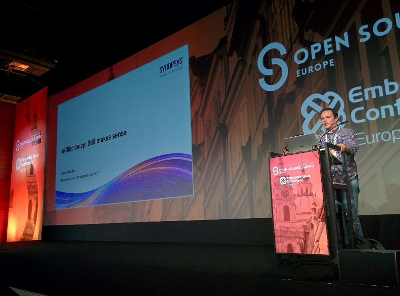

embARC Community News and Updates
GNU Toolchain for ARC Processors 2018.09 is now available
Nov 27, 2018
Release 2018.09 of GNU Toolchain for ARC Processors is now available. Read the release notes and
download the release here.
The embARC team
embARC Open Software Platform (OSP) 2018.09 is now available
Nov 2, 2018
Release 2018.09 of the embARC OSP is now available. Read the release notes and
download the release here.
The embARC team
GNU Toolchain for ARC Processors 2018.03 is now available
June 22, 2018
Release 2018.03 of GNU Toolchain for ARC Processors is now available. Read the release notes and
download the release here.
The embARC team
Come see us at LC3 taking place June 25 - 27 in Beijing, China!
June 15, 2018
embARC team members Wayne Ren and Huaqi Fang will be presenting
about retrofitting memory protection in Zephyr OS.
The embARC team
New ARC HS Development Kit is available Now!
January 29, 2018
Today, we announced availability of the DesignWare® ARC® HS Development Kit
to accelerate software development for the ARC HS processor family. The ARC HS Development Kit is a ready-to-use software development platform that includes access to the embARC open source software
packages on the embARC website. The ARC HS Development Kit includes a multicore ARC HS-based chip, implemented in a TSMC 28 HPM process, that integrates
a wide range of interfaces including Ethernet, USB, SDIO, I2C, SPI, UART, and GPIO, as well as a Vivante GC7000 Nano Ultra GPU. The kit also features an on-board WiFi and Bluetooth module. This
combination of ARC HS processors and the comprehensive set of peripherals allow developers to build and debug complex software on a fully-featured hardware platform.
The Kit can be ordered online from the Synopsys web site.
The embARC team
Who uses Pmod? We do!
November 16, 2017
Digilent featured Synopsys's use of the Pmod standard on the ARC EM Starter Kit in a recent blog post.
Pmods provide for great way to extend functionality of development platforms. In fact we are happy to say that we continue to leverage the Pmod standard on our
upcoming ARC IoT Development Kit platform, while also adding support for Arduino and mikroBus standards.
Stay tuned to these pages for upcoming embARC OSP support for the ARC IoT Development Kit!
The embARC team
Release 4.14 of the Linux kernel is now available from kernel.org
November 13, 2017
ARC architecture updates include:
- Initial port for HSDK board
- plat-eznps: new command line argument for HW scheduler at MTM
- Miscellaneous bug fixes
The embARC team
The ARC Processor Summit 2017 - Beijing edition!
October 30, 2017
Join us at Synopsys' ARC® Processor Summit in Beijing, China on November 15 to learn about the latest technologies and
trends in embedded processor IP, software, programming tools and applications. This free one-day event consists of multiple tracks and
sessions in which experts from Synopsys, partners and the ARC user community will discuss challenges and solutions for a variety of topics including
IoT security, automotive safety, embedded vision and much, much more.
During lunch we will have a Birds of a Feather session giving you the opportunity to meet with industry experts and others interested in similar topics.
If there is a topic you’d like represented, please submit your idea to birdsofafeather@synopsys.com subject line “Birds of a Feather."
Review the program and register here.
The embARC team
GNU Toolchain for ARC Processors 2017.09 is now available
October 30, 2017
Release 2017.09 of GNU Toolchain for ARC Processors is now available. Read the release notes and
download the release here.
The embARC team
Embedded Linux Conference Europe: uClic today: Still makes sense
October 25, 2017
Synopsys' Alexey Brodkin recently attended the ELCE conference where he provided an update on the state of uClibc
for embedded applications.

You can find the full video of Alexey's talk here.
The embARC team
The ARC Processor Summit 2017 is less than 2 weeks away!
September 14, 2017
Join us at Synopsys' ARC® Processor Summit in Santa Clara, CA on September 26 to learn about the latest technologies and
trends in embedded processor IP, software, programming tools and applications. This free one-day event consists of multiple tracks and over 25
sessions in which experts from Synopsys, partners and the ARC user community will discuss challenges and solutions for a variety of topics including
IoT security, automotive safety, embedded vision and much, much more.
During lunch we will have a Birds of a Feather session giving you the opportunity to meet with industry experts and others interested in similar topics.
If there is a topic you’d like represented, please submit your idea to birdsofafeather@synopsys.com subject line “Birds of a Feather."
Review the program and register here.
The embARC team
Come see us at Embedded Linux Conference Europe taking place October 23 - 26 at the Hilton Prague in Prague, Czech Republic!
September 14, 2017
Our Alexey Brodkin will be presenting
on the state of uClibc for embedded linux. You can find more information about the conference here.
The embARC team
Release 1.9 of the Zephyr project is now available
September 7, 2017
The Zephyr Project today released version 1.9 of Zephyr. Changes to the ARC architecture
support include support for nested interrupts, MPU support via a new driver and support for ARC EM Starter Kit v2.2 for legacy MPU use cases.
Read the release notes
for the complete list of changes in the release.
The embARC team
Release 4.13 of the Linux kernel is now available from kernel.org
September 3, 2017
ARC architecture updates include:
The embARC team
Release 4.12 of the Linux kernel is now available from kernel.org
July 3, 2017
ARC architecture updates include:
The embARC team
Release 1.8 of the Zephyr project is now available
June 16, 2017
The Zephyr Project today released version 1.8 of Zephyr. Main changes to the ARC architecture
support include an update to the ARC EM Starter Kit Platform to support the latest version of the EMSK, v2.3.
Read the release notes
for the complete list of changes in the release.
The embARC team
The NEW embARC is here!
June 7, 2017
Today, we launched the new embARC Community website and have expanded it to cover all major open
source projects supporting the ARC Architecture.
For each open source project, we provide links to:
The open source projects include drivers, operating systems, middleware and applications examples. There is support for ARC EM and ARC HS processors.
The recently released embARC OSP 2017.03 is also part of the expanded embARC Community and we have enabled users to be able to easily contribute to our open source projects on GitHub.
The embARC team
GNU Toolchain for ARC Processors 2017.03 is now available
May 30, 2017
Release 2017.03 of GNU Toolchain for ARC Processors is now available. Read the release notes and
download the release here.
The embARC team
Support for ARC EM Processor added to Openthread project
May 23, 2017
We are pleased to report that support for the EMSK platform has been contributed by Synopsys to the upstream
Openthread project.
Please consult the Openthread documentation for
more information about running Openthread on the ARC EMSK Platform.
The embARC team
GCC 7.1 is now released
May 2, 2017
Release 7.1 of GCC has now been released upstream at gnu.gcc.org.
Support for all ARC processors is now available from upstream GCC for users who want to be on the
bleeding edge.
The following features were added for the ARC architecture:
Read the full GCC 7.1 release notes here.
The embARC team
embARC OSP 2017.03 is now released
April 14, 2017
A new release of embARC OSP distribution is now
available for download.
The embARC team
New Smart Home Example using embARC videos posted
November 1, 2016
A new 5-part video series on how to build an
IoT SmartHome application using Amazon AWS IoT and embARC is now available
on our YouTube channel in included here for convenience.
More...